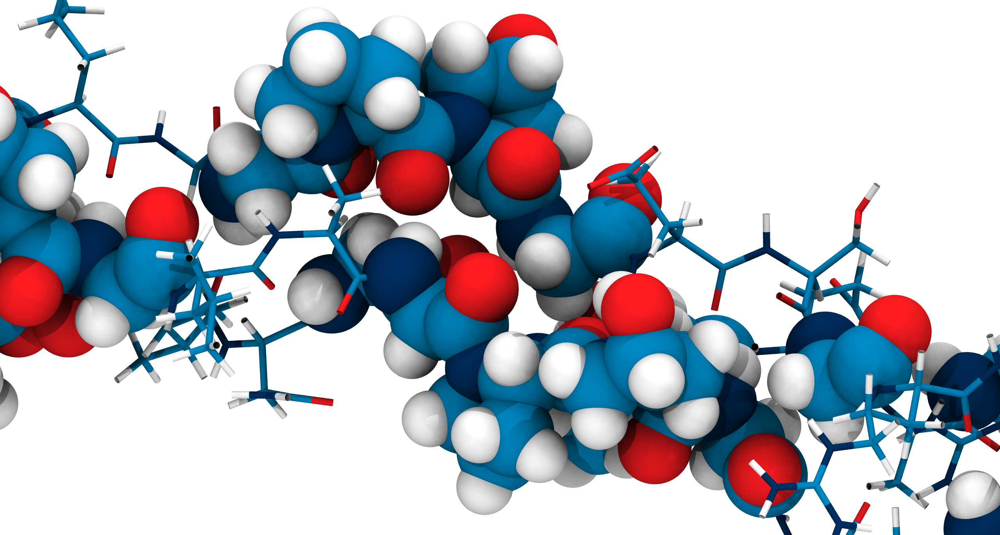
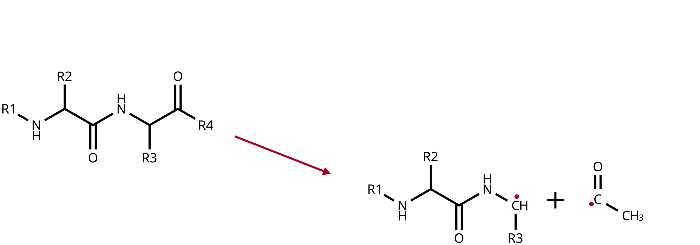
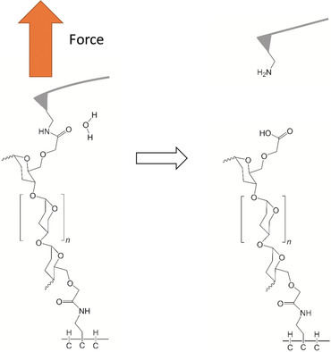
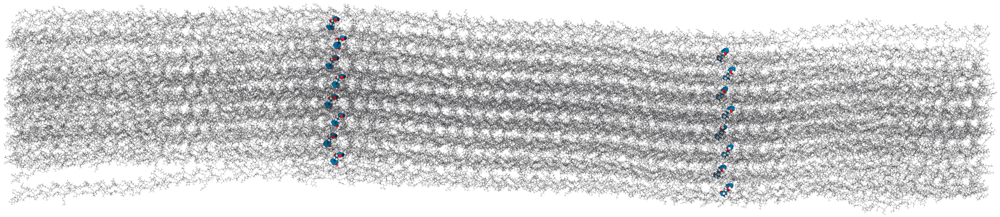
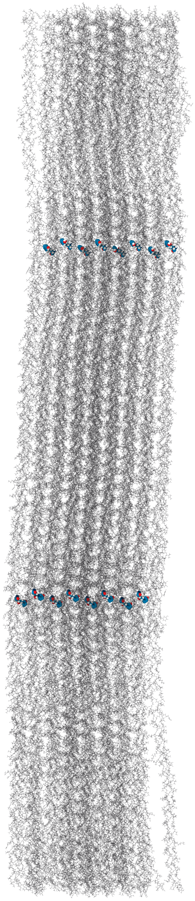
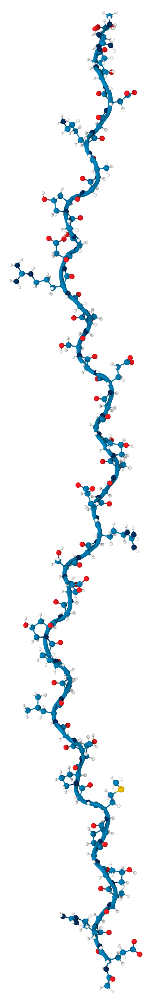
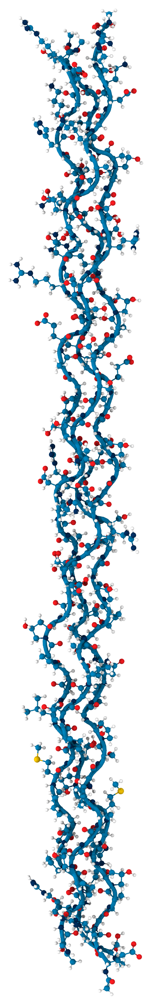
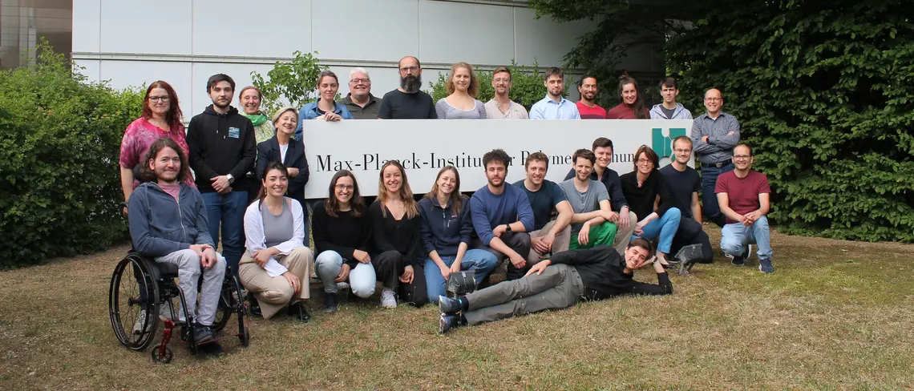

Dissecting Cleavage Mechanisms
in Tensed Collagen Fibrils
using Reactive Molecular Dynamics Simulations
An orange a day keeps the scurvy away


Citrus fruits contain Vitamin C ( 🟠 )
1747, HMS Salisbury, James Lind performs the first clinical trial with a control group [1]
Collagen keeps us together


- single peptide
- triple helix
- collagen fibril

The Gly-X-Y motif allows tight turns and packing



X,Y: proline or hydroxyproline
Prolyl hydroxylase ( 🟠 )
Collagen I is cross-linked


Lysyl-hydroxylase ( 🟠 )
→

Lysyl oxidase
→

A rather radical discovery: mechanoradicals in collagen

“Mechanoradicals in tensed tendon collagen as a source of oxidative stress”, Zapp et al. [3]
Dissecting cleavage mechanisms in tensed collagen fibrils using reactive molecular dynamics simulations

“Mechanical Activation Drastically Accelerates Amide Bond Hydrolysis,
Matching Enzyme Activity”, Pill et al., 2019 [4]
Hydrolysis
vs.
Homolysis
What factors influence their competition?
What is the influence of the collagen structure?
Why do we still see radicals?
Dissecting cleavage mechanisms in tensed collagen fibrils using reactive molecular dynamics simulations
QM/MM simulations of
base-catalyzed hydrolysis

Kinetic Monte Carlo Molecular Dynamics:
KIMMDY

Molecular dynamics / Molecular Mechanics


How do we make the atoms move?
\[ \begin{array}{rcl} F &=& ma \\ -\frac{dV}{dr} &=& m\frac{d^2r}{dt^2}, \end{array} \tag{1}\]
\(V\): potential
\(r\): position
\(F\): force
\(a\): acceleration
\(t\): time
\(m\): mass
Force Fields and Topologies


Connectivity and parameters pre-defined!
Quantum mechanics/molecular mechanics

DFT: Density Functional Theory
Base-catalyzed hydrolysis

TS: transition state
TI: Tetrahedral Intermediate
ZI: Zwitterionic Intermediate

Previous work on base-catalyzed hydrolysis



System Setup


[]: input parameters.QM region selection and setup


\(BD\): Bürgi-Dunitz angle, 107°
\(FL\): Flippin-Lodge angle, 0°
Umbrella sampling the reaction coordinate

QM/MM simulations reveal mechanistic details of the tetrahedral intermediate formation


QM/MM simulations reveal mechanistic details of the tetrahedral intermediate formation


The triple helix marginally impedes hydroxide attack thermodynamically


\(\Delta\Delta G\) 9.02 ±4.41 kJ/mol (±SEM)
Rate reduction due to triple helix:
30 to 40 times.
Proton mobility in explicit QM solvent molecules allows breaking of the peptide bond


Discussion

- Effect size?
- Survivorship bias?
- Cause?
- Computational cost

Kinetic Monte Carlo Molecular Dynamics: KIMMDY
with Eric Hartmann and Kai Riedmiller,
inspired by Benedikt Rennekamp [6]
graeter-group.github.io/kimmdy/

Read now on bioRxiv:
KIMMDY: A biomolecular reaction emulator [7],
or soon in Nature Communications.
KIMMDY is easy to use


KIMMDY is easy to extend to new chemistries


KIMMDY takes care of the complicated topology modifications.
Parametrization interface to obtain parameters after a reaction

Graph Attentional Protein Parametrization by Leif Seute [8]
also a good excuse to show the mol* plugin I wrote for our documentation
Slow-growth to execute even complex reactions like hydrolysis

Does not have to follow the chemically
accurate reaction coordinate

Applying KIMMDY to collagen hydrolysis and homolysis
Applying KIMMDY to collagen hydrolysis and homolysis
Arrhenius equation
\[ k = A\,\mathrm{e}^{\left(\frac{-\mathbf{E_\mathrm{a}}}{RT}\right)} \]
\(A\): pre-exponential factor (attempt frequency)
\(R\): gas constant
\(T\): temperature
Morse potential

Hydrolysis rate incorporates SASA
Szasza SASA = Solvent Accessible Surface Area
Hydrolysis rate incorporates pH, SASA and force

\[ \mathrm{Rate}(bond, t) = \ \frac{\mathrm{SASA}(bond, t)}{\mathrm{SASA}_{max}} \cdot \ \frac{c_{OH^-}}{c_{OH^-_{\mathrm{exp}}}} \ \cdot \mathrm{rate}_{\mathrm{exp}}(F_{bond,t}) \tag{2}\]
Solvent accessibility in the fibril is heterogeneous




Peptide bonds near the center are still accessible


Homolysis becomes competitive with hydrolysis by force concentration


Concluding Thoughts
- KIMMDY is a versatile tool for reactive MD simulations:
graeter-group.github.io/kimmdy/
- Triple helix marginally impedes hydrolysis.
Homolysis becomes competitive to hydrolysis due to force concentration
Thesis and slides available at
jmbuhr.de/phd-thesisEat your oranges! 🟠
Thank You!
Questions?


This work was supported by the Klaus Tschira Foundation and has received funding from the European Research Council (ERC).
Force Fields and Topologies
More SASA

KIMMDY finds a new radical scavanging candidate in collagen


Proton mobility in explicit QM solvent molecules allows breaking of the peptide bond


KIMMDY is easy to install and well documented
graeter-group.github.io/kimmdy/

Direct comparison of hydrolysis and homolysis force response


The unique effect of prolines


Supplementary Information

Small multiples plot of the approach of the hydroxide in terms of distances of the carbonyl \(\ce{O}\) of the TI to nearest proton of either a MM solvent molecule (cyan), the protein (black) or the QM water (magenta) across all umbrella windows. Distances are average within each window and the windows belonging to the same approach simulation are connected. The thick lines are a LOESS curve across all windows.
Supplementary Information

Figure 1: The protonation states are show as the average number of protons assigned to either the hydroxyl \(\ce{O}\) or the carbonyl \(\ce{O}\) with all sampling windows averaged for each system. The region for detection of TS1 is shaded cyan, while the region for detection of the TI is shaded gray.